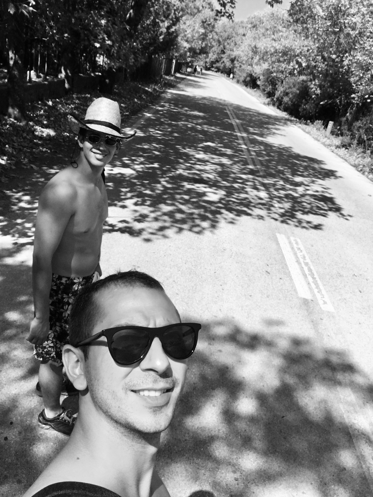
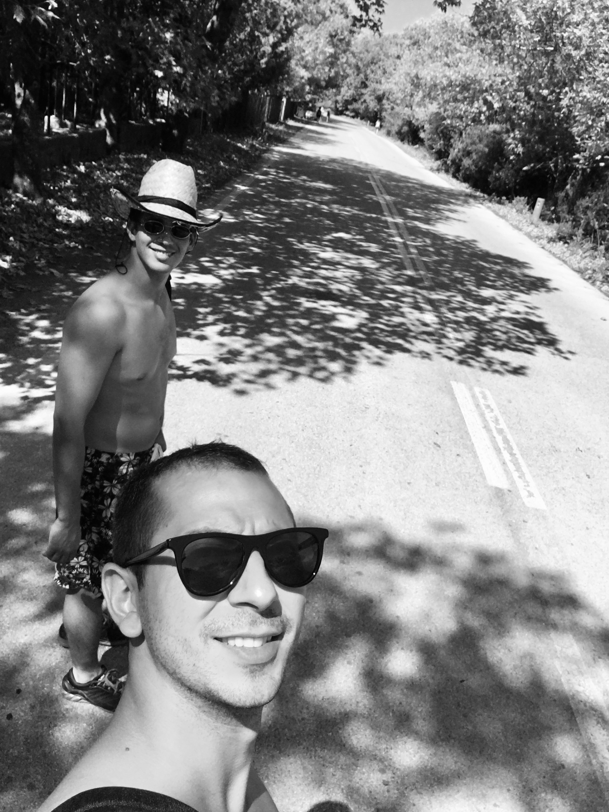

My career started with a Cisco certification and an internship at Printec for Athens International Airport (AIA) IT Helpdesk.
About...
Hi, I'm Christoforos Papachristoforou (Devcrow), a passionate game developer driven by creativity and innovation.


 

Game development for me is about merging imagination with technical skill, turning bold ideas into reality through clean code and engaging mechanics.